Summary
This experiment investigates kubernetes pod autoscaling. Central Composite design to optimize HPA target CPU, scale-up window, and replica bounds for request latency and cost.
The design varies 3 factors: target cpu pct (%), ranging from 40 to 80, scaleup window (s), ranging from 15 to 120, and max replicas (pods), ranging from 5 to 30. The goal is to optimize 2 responses: p99 latency ms (ms) (minimize) and hourly cost (USD) (minimize). Fixed conditions held constant across all runs include min replicas = 2, namespace = production.
A Central Composite Design (CCD) was selected to fit a full quadratic response surface model, including curvature and interaction effects. With 3 factors this produces 22 runs including center points and axial (star) points that extend beyond the factorial range.
Quadratic response surface models were fitted to capture potential curvature and factor interactions. The RSM contour plots below visualize how pairs of factors jointly affect each response.
Key Findings
For p99 latency ms, the most influential factors were max replicas (66.8%), scaleup window (20.4%), target cpu pct (12.8%). The best observed value was 85.0 (at target cpu pct = 40, scaleup window = 120, max replicas = 30).
For hourly cost, the most influential factors were max replicas (59.0%), target cpu pct (30.4%), scaleup window (10.6%). The best observed value was 0.73 (at target cpu pct = 60, scaleup window = 67.5, max replicas = 17.5).
Recommended Next Steps
- Run confirmation experiments at the predicted optimal settings to validate the model.
- Consider whether any fixed factors should be varied in a future study.
Experimental Setup
Factors
| Factor | Low | High | Unit |
|---|
target_cpu_pct | 40 | 80 | % |
scaleup_window | 15 | 120 | s |
max_replicas | 5 | 30 | pods |
Fixed: min_replicas = 2, namespace = production
Responses
| Response | Direction | Unit |
|---|
p99_latency_ms | ↓ minimize | ms |
hourly_cost | ↓ minimize | USD |
Configuration
{
"metadata": {
"name": "Kubernetes Pod Autoscaling",
"description": "Central Composite design to optimize HPA target CPU, scale-up window, and replica bounds for request latency and cost"
},
"factors": [
{
"name": "target_cpu_pct",
"levels": [
"40",
"80"
],
"type": "continuous",
"unit": "%"
},
{
"name": "scaleup_window",
"levels": [
"15",
"120"
],
"type": "continuous",
"unit": "s"
},
{
"name": "max_replicas",
"levels": [
"5",
"30"
],
"type": "continuous",
"unit": "pods"
}
],
"fixed_factors": {
"min_replicas": "2",
"namespace": "production"
},
"responses": [
{
"name": "p99_latency_ms",
"optimize": "minimize",
"unit": "ms"
},
{
"name": "hourly_cost",
"optimize": "minimize",
"unit": "USD"
}
],
"settings": {
"operation": "central_composite",
"test_script": "use_cases/27_kubernetes_pod_autoscaling/sim.sh"
}
}
Experimental Matrix
The Central Composite Design produces 22 runs. Each row is one experiment with specific factor settings.
| Run | target_cpu_pct | scaleup_window | max_replicas |
|---|
| 1 | 60 | 67.5 | 17.5 |
| 2 | 80 | 15 | 30 |
| 3 | 40 | 120 | 5 |
| 4 | 60 | 163.351 | 17.5 |
| 5 | 60 | 67.5 | 17.5 |
| 6 | 23.4852 | 67.5 | 17.5 |
| 7 | 60 | 67.5 | -5.32177 |
| 8 | 60 | 67.5 | 17.5 |
| 9 | 80 | 120 | 5 |
| 10 | 96.5148 | 67.5 | 17.5 |
| 11 | 60 | 67.5 | 17.5 |
| 12 | 60 | -28.3514 | 17.5 |
| 13 | 60 | 67.5 | 17.5 |
| 14 | 40 | 15 | 30 |
| 15 | 60 | 67.5 | 17.5 |
| 16 | 80 | 15 | 5 |
| 17 | 60 | 67.5 | 40.3218 |
| 18 | 80 | 120 | 30 |
| 19 | 60 | 67.5 | 17.5 |
| 20 | 40 | 15 | 5 |
| 21 | 40 | 120 | 30 |
| 22 | 60 | 67.5 | 17.5 |
Step-by-Step Workflow
1
Preview the design
$ python doe.py info --config use_cases/27_kubernetes_pod_autoscaling/config.json
2
Generate the runner script
$ python doe.py generate --config use_cases/27_kubernetes_pod_autoscaling/config.json \
--output use_cases/27_kubernetes_pod_autoscaling/results/run.sh --seed 42
3
Execute the experiments
$ bash use_cases/27_kubernetes_pod_autoscaling/results/run.sh
4
Analyze results
$ python doe.py analyze --config use_cases/27_kubernetes_pod_autoscaling/config.json
5
Get optimization recommendations
$ python doe.py optimize --config use_cases/27_kubernetes_pod_autoscaling/config.json
6
Multi-objective optimization
With 2 competing responses, use --multi to find the best compromise via Derringer–Suich desirability.
$ python doe.py optimize --config use_cases/27_kubernetes_pod_autoscaling/config.json --multi
7
Generate the HTML report
$ python doe.py report --config use_cases/27_kubernetes_pod_autoscaling/config.json \
--output use_cases/27_kubernetes_pod_autoscaling/results/report.html
Features Exercised
| Feature | Value |
|---|
| Design type | central_composite |
| Factor types | continuous (all 3) |
| Arg style | double-dash |
| Responses | 2 (p99_latency_ms ↓, hourly_cost ↓) |
| Total runs | 22 |
Analysis Results
Generated from actual experiment runs using the DOE Helper Tool.
Response: p99_latency_ms
Top factors: max_replicas (66.8%), scaleup_window (20.4%), target_cpu_pct (12.8%).
ANOVA
| Source | DF | SS | MS | F | p-value |
|---|
| Source | DF | SS | MS | F | p-value |
| target_cpu_pct | 4 | 467.0540 | 116.7635 | 0.121 | 0.9715 |
| scaleup_window | 4 | 920.1582 | 230.0395 | 0.238 | 0.9098 |
| max_replicas | 4 | 8368.5640 | 2092.1410 | 2.166 | 0.1543 |
| Lack | of | Fit | 2 | 4007.5332 | 2003.7666 |
| Pure | Error | 7 | 6761.5687 | | |
| Error | 9 | 10769.1020 | 965.9384 | | |
| Total | 21 | 20524.8782 | 977.3752 | | |
Pareto Chart
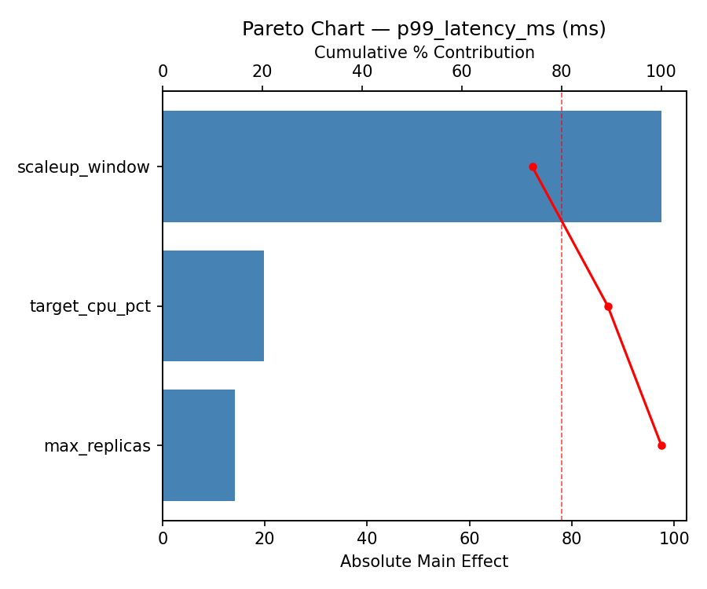
Main Effects Plot
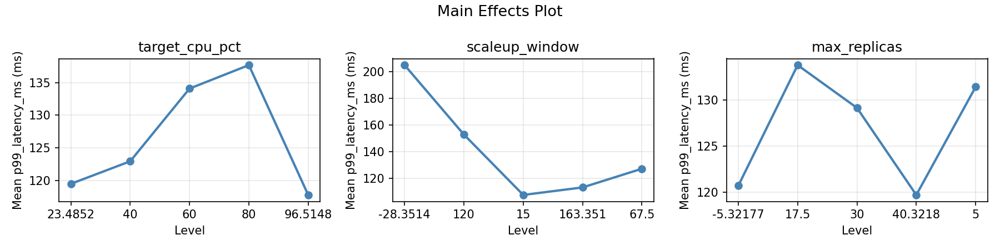
Normal Probability Plot of Effects
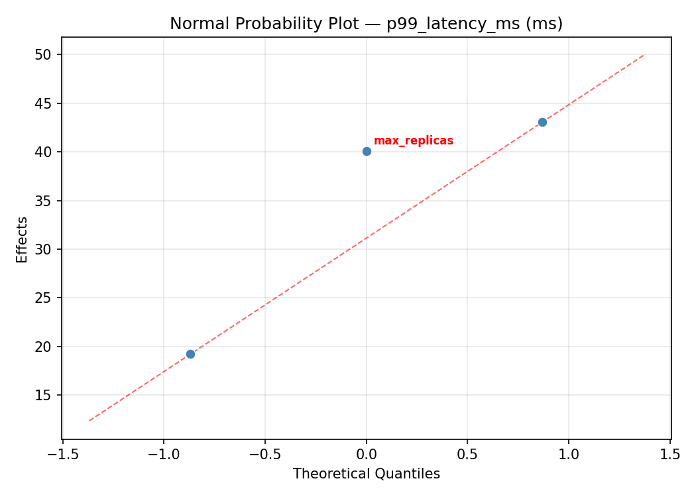
Half-Normal Plot of Effects
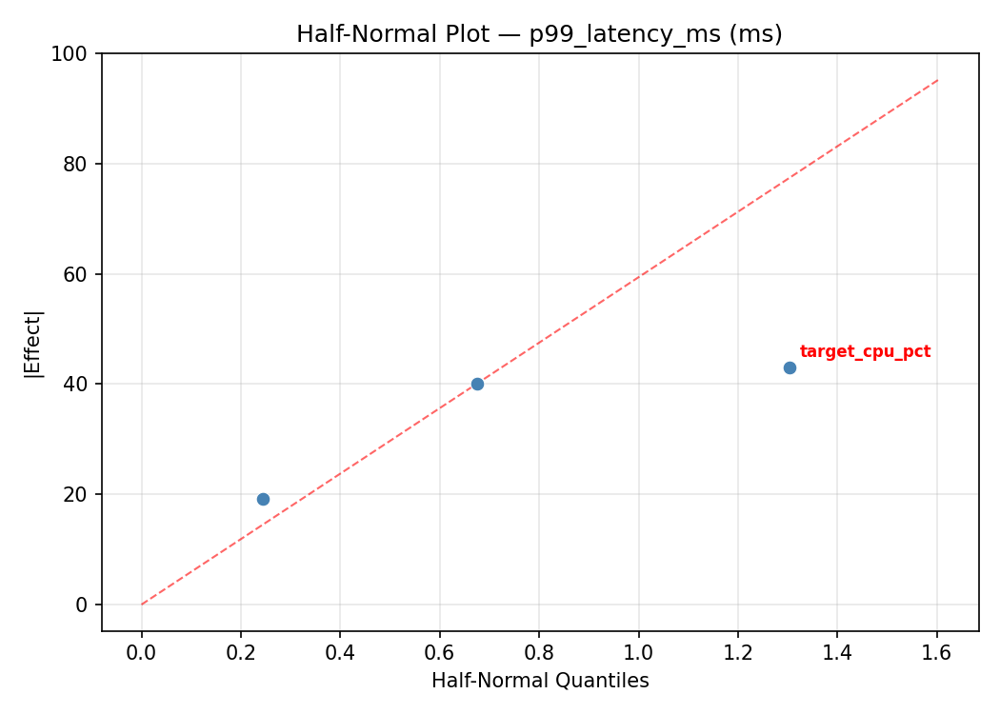
Model Diagnostics
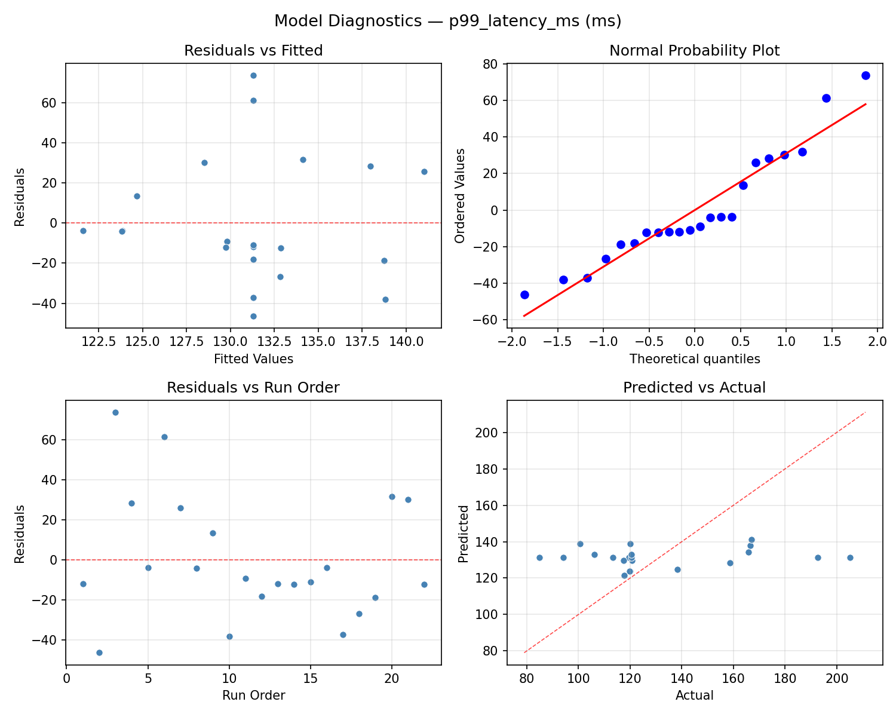
Response: hourly_cost
Top factors: max_replicas (59.0%), target_cpu_pct (30.4%), scaleup_window (10.6%).
ANOVA
| Source | DF | SS | MS | F | p-value |
|---|
| Source | DF | SS | MS | F | p-value |
| target_cpu_pct | 4 | 4.3034 | 1.0759 | 0.233 | 0.9129 |
| scaleup_window | 4 | 2.3653 | 0.5913 | 0.128 | 0.9684 |
| max_replicas | 4 | 49.3054 | 12.3264 | 2.669 | 0.1019 |
| Lack | of | Fit | 2 | 26.9401 | 13.4700 |
| Pure | Error | 7 | 32.3289 | | |
| Error | 9 | 59.2690 | 4.6184 | | |
| Total | 21 | 115.2431 | 5.4878 | | |
Pareto Chart
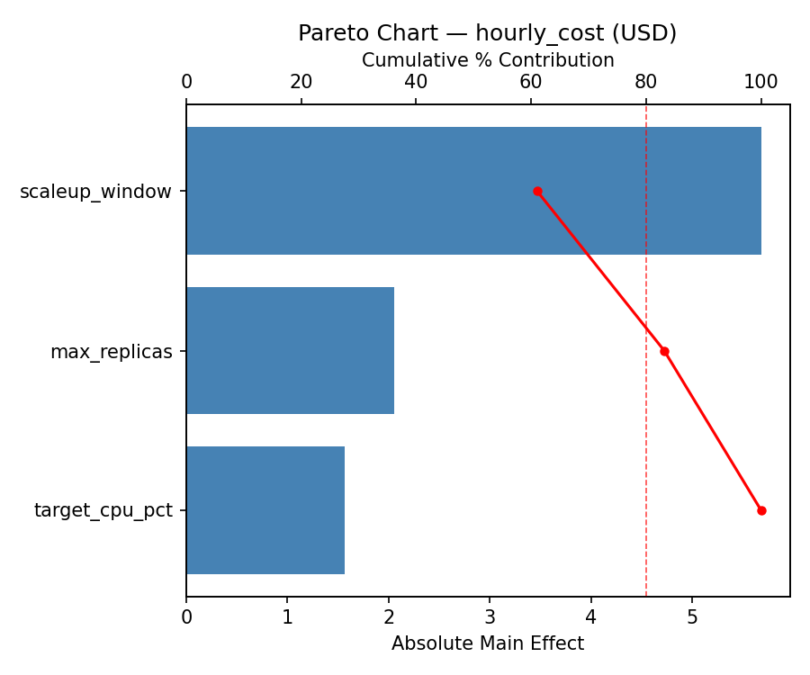
Main Effects Plot
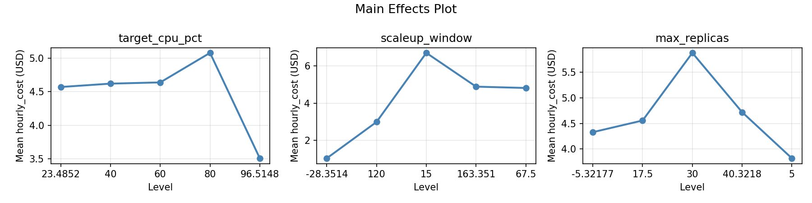
Normal Probability Plot of Effects
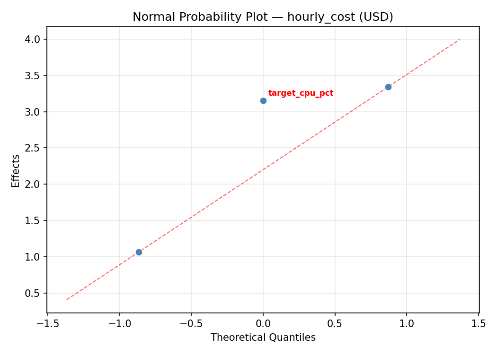
Half-Normal Plot of Effects
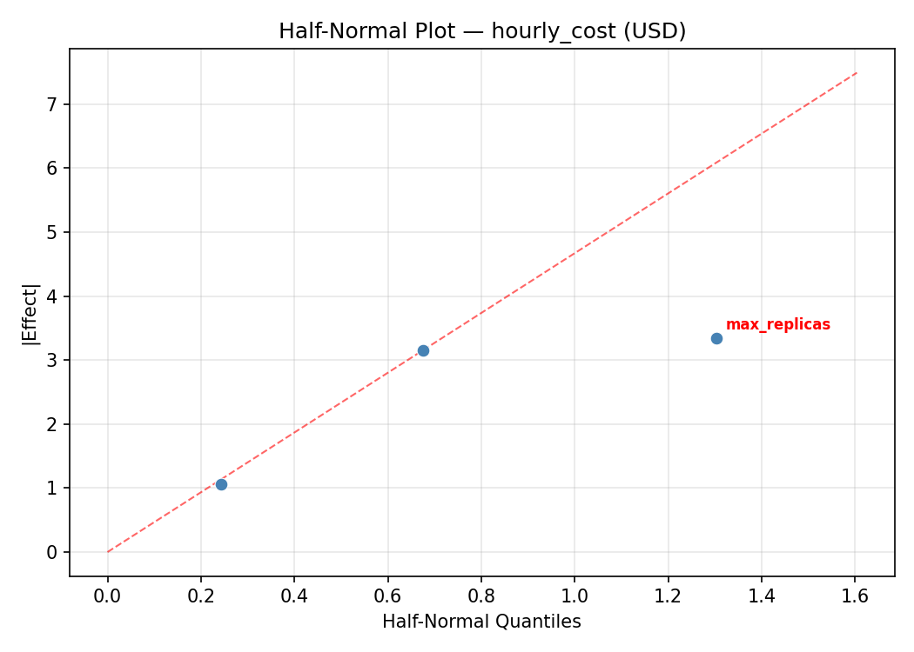
Model Diagnostics
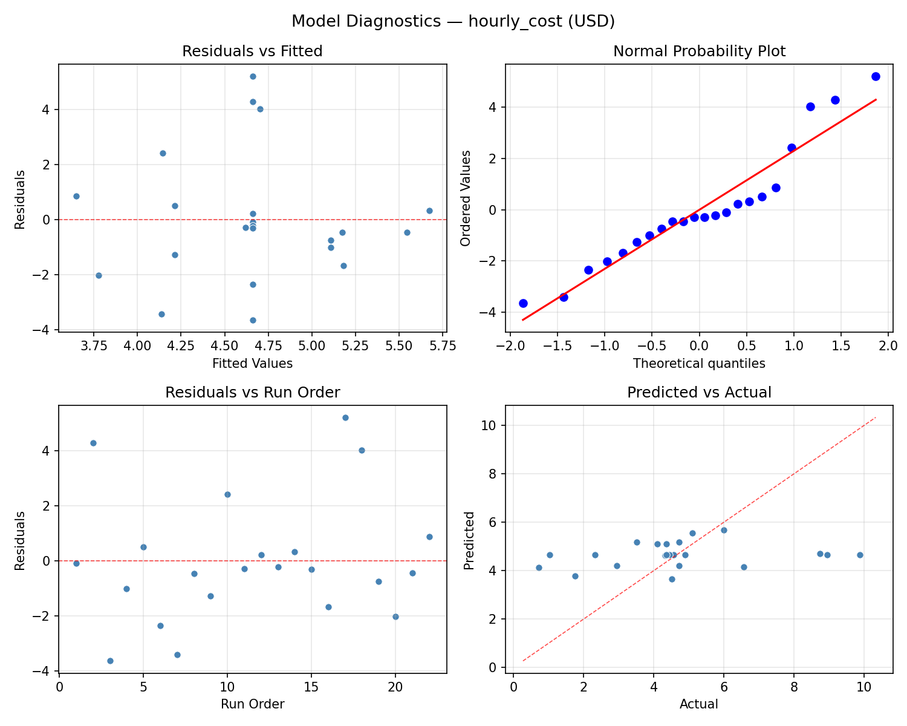
Response Surface Plots
3D surfaces fitted with quadratic RSM. Red dots are observed data points.
hourly cost scaleup window vs max replicas
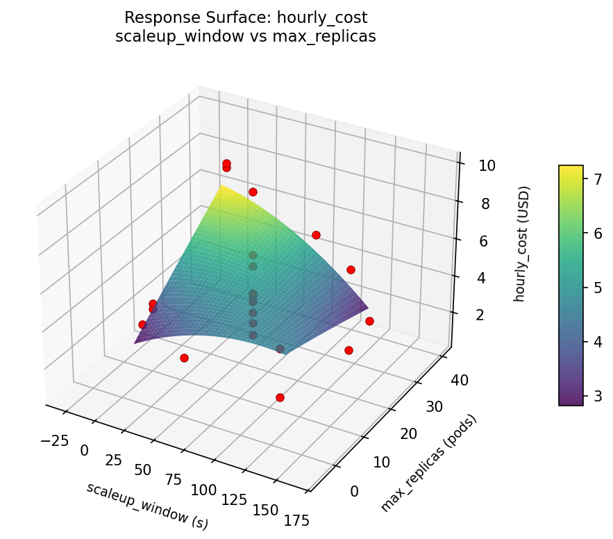
hourly cost target cpu pct vs max replicas
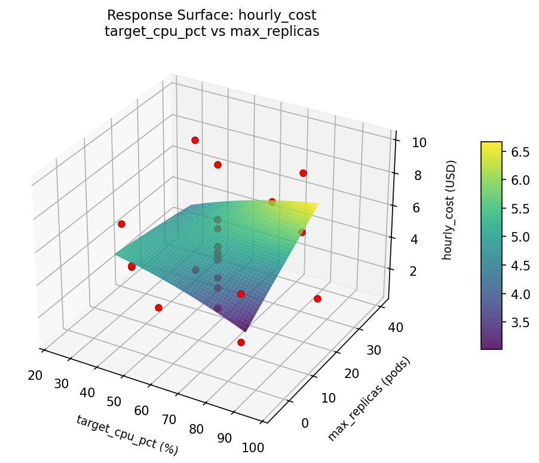
hourly cost target cpu pct vs scaleup window
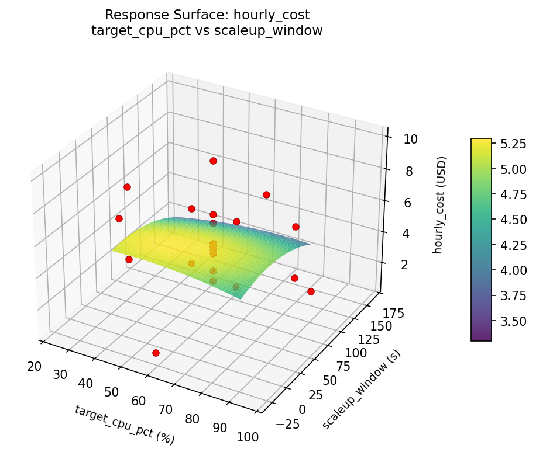
p99 latency ms scaleup window vs max replicas
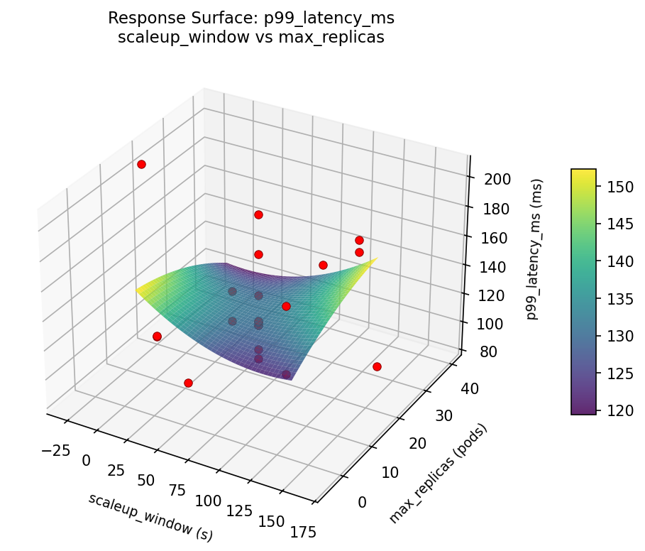
p99 latency ms target cpu pct vs max replicas
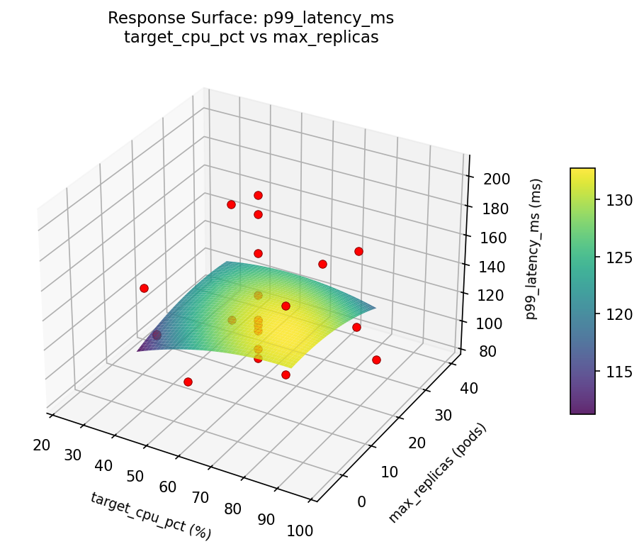
p99 latency ms target cpu pct vs scaleup window
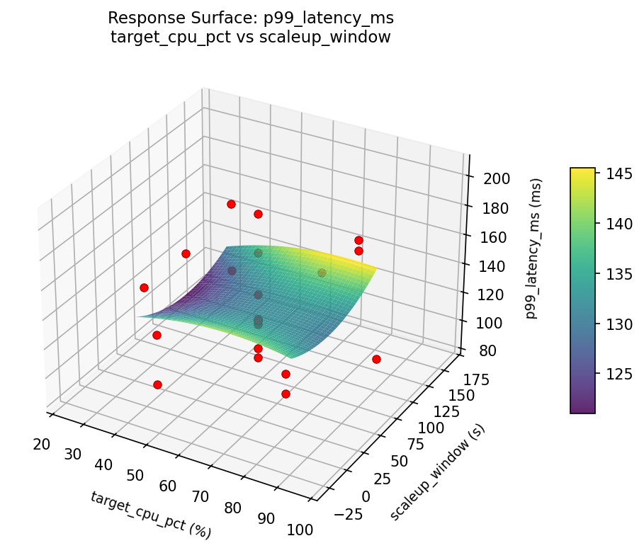
Multi-Objective Optimization
When responses compete, Derringer–Suich desirability finds the best compromise.
Each response is scaled to a 0–1 desirability, then combined via a weighted geometric mean.
Overall Desirability
D = 0.6948
Per-Response Desirability
| Response | Weight | Desirability | Predicted | Dir |
|---|
p99_latency_ms |
1.5 |
|
117.80 0.7063 117.80 ms |
↓ |
hourly_cost |
1.0 |
|
3.51 0.6780 3.51 USD |
↓ |
Recommended Settings
| Factor | Value |
|---|
target_cpu_pct | 40 % |
scaleup_window | 15 s |
max_replicas | 5 pods |
Source: from observed run #16
Trade-off Summary
Sacrifice = how much worse than single-objective best.
| Response | Predicted | Best Observed | Sacrifice |
|---|
hourly_cost | 3.51 | 0.73 | +2.78 |
Top 3 Runs by Desirability
| Run | D | Factor Settings |
|---|
| #12 | 0.6529 | target_cpu_pct=60, scaleup_window=67.5, max_replicas=40.3218 |
| #19 | 0.6490 | target_cpu_pct=96.5148, scaleup_window=67.5, max_replicas=17.5 |
Model Quality
| Response | R² | Type |
|---|
hourly_cost | 0.1883 | linear |
Full Multi-Objective Output
============================================================
MULTI-OBJECTIVE OPTIMIZATION
Method: Derringer-Suich Desirability Function
============================================================
Overall desirability: D = 0.6948
Response Weight Desirability Predicted Direction
---------------------------------------------------------------------
p99_latency_ms 1.5 0.7063 117.80 ms ↓
hourly_cost 1.0 0.6780 3.51 USD ↓
Recommended settings:
target_cpu_pct = 40 %
scaleup_window = 15 s
max_replicas = 5 pods
(from observed run #16)
Trade-off summary:
p99_latency_ms: 117.80 (best observed: 85.00, sacrifice: +32.80)
hourly_cost: 3.51 (best observed: 0.73, sacrifice: +2.78)
Model quality:
p99_latency_ms: R² = 0.2777 (linear)
hourly_cost: R² = 0.1883 (linear)
Top 3 observed runs by overall desirability:
1. Run #16 (D=0.6948): target_cpu_pct=40, scaleup_window=15, max_replicas=5
2. Run #12 (D=0.6529): target_cpu_pct=60, scaleup_window=67.5, max_replicas=40.3218
3. Run #19 (D=0.6490): target_cpu_pct=96.5148, scaleup_window=67.5, max_replicas=17.5
Full Analysis Output
=== Main Effects: p99_latency_ms ===
Factor Effect Std Error % Contribution
--------------------------------------------------------------
max_replicas 92.1000 6.6653 66.8%
scaleup_window 28.1500 6.6653 20.4%
target_cpu_pct 17.6000 6.6653 12.8%
=== ANOVA Table: p99_latency_ms ===
Source DF SS MS F p-value
-----------------------------------------------------------------------------
target_cpu_pct 4 467.0540 116.7635 0.121 0.9715
scaleup_window 4 920.1582 230.0395 0.238 0.9098
max_replicas 4 8368.5640 2092.1410 2.166 0.1543
Lack of Fit 2 4007.5332 2003.7666 2.074 0.1961
Pure Error 7 6761.5687 965.9384
Error 9 10769.1020 965.9384
Total 21 20524.8782 977.3752
=== Summary Statistics: p99_latency_ms ===
target_cpu_pct:
Level N Mean Std Min Max
------------------------------------------------------------
23.4852 1 117.5000 0.0000 117.5000 117.5000
40 4 135.1000 33.9439 94.1000 166.9000
60 12 131.3167 32.9425 100.6000 205.1000
80 4 134.3250 39.4290 85.0000 166.4000
96.5148 1 117.8000 0.0000 117.8000 117.8000
scaleup_window:
Level N Mean Std Min Max
------------------------------------------------------------
-28.3514 1 119.5000 0.0000 119.5000 119.5000
120 4 141.4500 24.5678 120.0000 166.4000
15 4 127.9750 44.5265 85.0000 166.9000
163.351 1 113.3000 0.0000 113.3000 113.3000
67.5 12 131.5250 32.8165 100.6000 205.1000
max_replicas:
Level N Mean Std Min Max
------------------------------------------------------------
-5.32177 1 100.6000 0.0000 100.6000 100.6000
17.5 12 126.4833 25.7949 106.1000 205.1000
30 4 114.4500 33.0166 85.0000 158.7000
40.3218 1 192.7000 0.0000 192.7000 192.7000
5 4 154.9750 22.8536 120.7000 166.9000
=== Main Effects: hourly_cost ===
Factor Effect Std Error % Contribution
--------------------------------------------------------------
max_replicas 4.8400 0.4994 59.0%
target_cpu_pct 2.4900 0.4994 30.4%
scaleup_window 0.8683 0.4994 10.6%
=== ANOVA Table: hourly_cost ===
Source DF SS MS F p-value
-----------------------------------------------------------------------------
target_cpu_pct 4 4.3034 1.0759 0.233 0.9129
scaleup_window 4 2.3653 0.5913 0.128 0.9684
max_replicas 4 49.3054 12.3264 2.669 0.1019
Lack of Fit 2 26.9401 13.4700 2.917 0.1199
Pure Error 7 32.3289 4.6184
Error 9 59.2690 4.6184
Total 21 115.2431 5.4878
=== Summary Statistics: hourly_cost ===
target_cpu_pct:
Level N Mean Std Min Max
------------------------------------------------------------
23.4852 1 6.0000 0.0000 6.0000 6.0000
40 4 5.0075 3.7598 0.7300 9.8700
60 12 4.4550 1.9446 1.0300 8.7300
80 4 4.8825 2.9963 1.7600 8.9500
96.5148 1 3.5100 0.0000 3.5100 3.5100
scaleup_window:
Level N Mean Std Min Max
------------------------------------------------------------
-28.3514 1 4.5700 0.0000 4.5700 4.5700
120 4 4.5625 0.4403 4.1000 5.1000
15 4 5.3275 4.7477 0.7300 9.8700
163.351 1 4.8900 0.0000 4.8900 4.8900
67.5 12 4.4592 2.0153 1.0300 8.7300
max_replicas:
Level N Mean Std Min Max
------------------------------------------------------------
-5.32177 1 6.5700 0.0000 6.5700 6.5700
17.5 12 4.5067 1.8044 1.0300 8.7300
30 4 7.1600 2.6297 4.7200 9.8700
40.3218 1 2.3200 0.0000 2.3200 2.3200
5 4 2.7300 1.7680 0.7300 4.3300
Optimization Recommendations
=== Optimization: p99_latency_ms ===
Direction: minimize
Best observed run: #2
target_cpu_pct = 40
scaleup_window = 120
max_replicas = 30
Value: 85.0
RSM Model (linear, R² = 0.0275, Adj R² = -0.1346):
Coefficients:
intercept +131.3091
target_cpu_pct +4.4455
scaleup_window +1.8609
max_replicas -3.9050
RSM Model (quadratic, R² = 0.3070, Adj R² = -0.2127):
Coefficients:
intercept +142.8854
target_cpu_pct +4.4455
scaleup_window +1.8609
max_replicas -3.9050
target_cpu_pct*scaleup_window -5.9750
target_cpu_pct*max_replicas +14.0500
scaleup_window*max_replicas -12.5750
target_cpu_pct^2 -4.6982
scaleup_window^2 -10.7582
max_replicas^2 -1.9081
Curvature analysis:
scaleup_window coef=-10.7582 concave (has a maximum)
target_cpu_pct coef=-4.6982 concave (has a maximum)
max_replicas coef=-1.9081 concave (has a maximum)
Notable interactions:
target_cpu_pct*max_replicas coef=+14.0500 (synergistic)
scaleup_window*max_replicas coef=-12.5750 (antagonistic)
target_cpu_pct*scaleup_window coef=-5.9750 (antagonistic)
Predicted optimum (from linear model, at observed points):
target_cpu_pct = 80
scaleup_window = 120
max_replicas = 5
Predicted value: 141.5206
Surface optimum (via L-BFGS-B, linear model):
target_cpu_pct = 40
scaleup_window = 15
max_replicas = 30
Predicted value: 121.0976
Model quality: Weak fit — consider adding center points or using a different design.
Factor importance:
1. target_cpu_pct (effect: 72.3, contribution: 44.2%)
2. max_replicas (effect: 51.6, contribution: 31.5%)
3. scaleup_window (effect: 39.8, contribution: 24.3%)
=== Optimization: hourly_cost ===
Direction: minimize
Best observed run: #7
target_cpu_pct = 60
scaleup_window = 67.5
max_replicas = 17.5
Value: 0.73
RSM Model (linear, R² = 0.0949, Adj R² = -0.0560):
Coefficients:
intercept +4.6605
target_cpu_pct -0.4851
scaleup_window +0.0251
max_replicas +0.7139
RSM Model (quadratic, R² = 0.4391, Adj R² = 0.0184):
Coefficients:
intercept +3.2023
target_cpu_pct -0.4851
scaleup_window +0.0251
max_replicas +0.7139
target_cpu_pct*scaleup_window -0.5575
target_cpu_pct*max_replicas -0.2175
scaleup_window*max_replicas +0.7600
target_cpu_pct^2 +1.1026
scaleup_window^2 +0.6586
max_replicas^2 +0.4261
Curvature analysis:
target_cpu_pct coef=+1.1026 convex (has a minimum)
scaleup_window coef=+0.6586 convex (has a minimum)
max_replicas coef=+0.4261 convex (has a minimum)
Notable interactions:
scaleup_window*max_replicas coef=+0.7600 (synergistic)
target_cpu_pct*scaleup_window coef=-0.5575 (antagonistic)
Predicted optimum (from quadratic model, at observed points):
target_cpu_pct = 40
scaleup_window = 120
max_replicas = 30
Predicted value: 8.1487
Surface optimum (via L-BFGS-B, quadratic model):
target_cpu_pct = 65.8767
scaleup_window = 103.319
max_replicas = 5
Predicted value: 2.6244
Model quality: Weak fit — consider adding center points or using a different design.
Factor importance:
1. target_cpu_pct (effect: 6.0, contribution: 55.9%)
2. scaleup_window (effect: 2.5, contribution: 23.0%)
3. max_replicas (effect: 2.3, contribution: 21.2%)